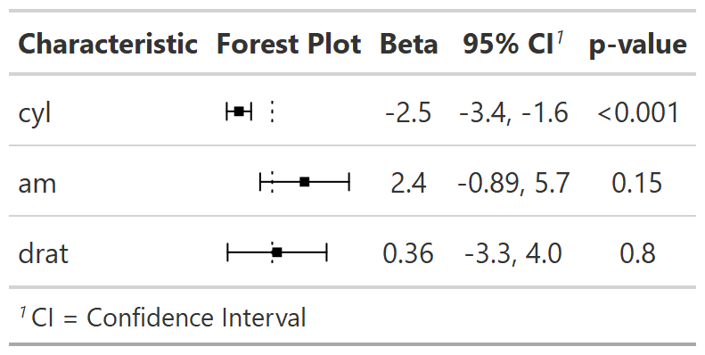

This function works with HTML output from the gt package only. Adds an in-line forest plot to a summary table.
add_inline_forest_plot(
x,
header = "**Forest Plot**",
spec_pointrange.args = NULL
)| x | a gtsummary object |
|---|---|
| header | string indicating column header of new forest plot column.
Default is |
| spec_pointrange.args | named list of arguments that will be passed to
|
gtsummary object
Estimates from tbl_regression() and tbl_uvregression() that have
been exponentiated are shown on the log scale.

Other gtsummary-related functions:
as_ggplot(),
gts_add_p_footnotes(),
gtsummary_butcher(),
style_tbl_compact(),
tbl_2way_summary(),
tbl_split(),
theme_gtsummary_msk()